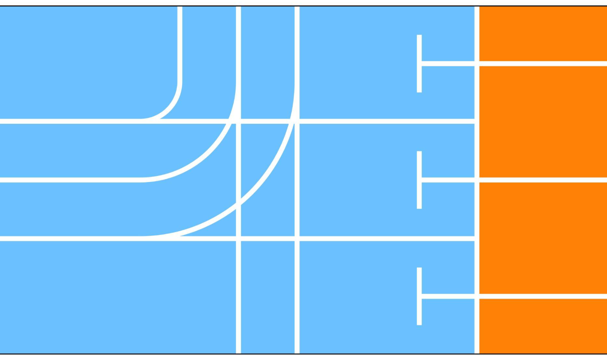

International Standards · ISDP
Edition 2027 · effective 1 January 2027 · current
Retrieved on 26 November 2026 from https://www.wada-ama.org/sites/default/files/2026-10/2027_international_standard_for_data_protection_isdp.pdf
Editions: 2027 (current) · 2021 (November 2021) · 2018 · 2015 · 2009 · 2009 (annex)
p. 1
2027 International Standard for Data Protection

p. 2
International Standard for Data Protection
The International Standard for Data Protection is a mandatory International Standard developed as part of the World Anti-Doping Program. It was developed in consultation with Signatories, public authorities, Athletes, and other relevant stakeholders.
The International Standard for the Protection of Privacy and Personal Information (ISPPPI) was first adopted in 2009 and came into effect in June 2009. It was subsequently amended three times, the first-time effective January 2015, the second time effective June 2018, the third time effective January 2021, and the fourth time effective 24 November 2024. With this fifth revised version, the ISPPPI has been renamed the International Standard for Data Protection (ISDP) and is effective as of 1 January 2027.
Published by:
World Anti-Doping Agency Stock Exchange Tower 800 Place Victoria (Suite 1700) PO Box 120 Montreal, Quebec, Canada H3C 0B4
www.wada-ama.org
Tel: +1 514 904 9232
Fax: +1 514 904 8650
E-mail: code@wada-ama.org
p. 3
p. 4
PART ONE: INTRODUCTION, CODE PROVISIONS AND INTERNATIONAL STANDARD PROVISIONS
1.0 Introduction and Scope
The purpose of the International Standard for Data Protection is to ensure that Anti-Doping Organizations apply appropriate, sufficient and effective privacy protections to the Personal Information they Process when conducting anti-doping programs, in recognition of the fact Anti-Doping Activities can impinge upon and implicate the privacy rights of individuals involved in and associated with organized sport, including Athletes and Athlete Support Personnel. The International Standard for Data Protection may also apply to other stakeholders, such as Laboratories, where specified in the Code, International Standards, Technical Documents or guidelines.
The Code, in particular, requires Athletes to furnish a significant amount of Personal Information to Anti-Doping Organizations. As a result, it is essential that Anti-Doping Organizations and other relevant stakeholders appropriately protect the Personal Information that they Process both to meet legal standards and to ensure the continued confidence and trust of those involved in organized sport.
The Code recognizes and affirms the importance of ensuring that the privacy rights of individuals subject to anti-doping programs based on the Code are fully respected. In support of this commitment, this International Standard sets forth a minimum, common set of rules to which Anti-Doping Organizations and other relevant stakeholders shall conform to when Processing Personal Information pursuant to the Code. In some cases, Anti-Doping Organizations or other stakeholders may be required by applicable laws to apply rules or standards that exceed those set forth in this International Standard.
A WADA expert reference group reviewed, discussed and prepared this document, and specifically took into account the Organization for Economic Cooperation and Development's (OECD) 1980 Guidelines on the Protection of Privacy and Transborder Flows of Personal Data; the Council of Europe Convention for the Protection of Individuals with regard to Automatic Processing of Personal Data (ETS. No. 108+); the APEC Privacy Framework; the Charter of Fundamental Rights of the European Union; EU Regulation 2016/679 on the protection of natural persons with regard to the processing of personal data (General Data Protection Regulation); and other international and regional data privacy rules, standards and case law, such as the judgement of the European Court of Human Rights of 18 January 2018 (FNASS and others vs. France).
2.0 Code Provisions
The following Articles in the Code are directly relevant to the International Standard for Data Protection; they can be obtained by referring to the Code itself:
- Code Article 14 Confidentiality and Reporting
p. 5
3.0 Interpretation
The official text of the International Standard for Data Protection shall be published in English and French. In the event of any conflict between the English and French versions, the English version shall prevail.
Like the Code, the International Standard for Data Protection has been drafted giving consideration to the principles of proportionality, human rights, and other applicable legal principles. It shall be interpreted and applied in that light.
The comments annotating various provisions of the International Standard for Data Protection shall be used to guide its interpretation.
Unless otherwise specified, references to Articles or Annex are references to Articles or the Annex of the International Standard for Data Protection.
Terms used in this International Standard that are defined terms from the Code are italicized. Terms that are defined in this or another International Standard are underlined.
Defined terms from the Code and International Standards that are used in the International Standard for Data Protection are found in Appendix 1.
The Annex and Appendix to the International Standard for Data Protection have the same mandatory status as the rest of the International Standard.
The following terms used in the International Standard for Data Protection shall be interpreted as indicated:
- "Shall" to indicate a mandatory requirement.
- "Should" to indicate a recommendation.
p. 6
PART TWO: STANDARDS FOR HANDLING PERSONAL INFORMATION
4.0 Processing Personal Information in Accordance with International Standard and Applicable Law
4.1 This International Standard sets forth a minimum set of requirements applicable to the Processing of Personal Information by Anti-Doping Organizations, their Third-Party Agents, and other stakeholders (if applicable) in the context of their Anti-Doping Activities. All Anti-Doping Organizations shall comply with this International Standard, even when its requirements exceed those arising under the Anti-Doping Organization's applicable data protection and/or privacy laws, reflecting the vital need to protect the privacy of individuals involved in and associated with anti-doping in sport.
4.2 Anti-Doping Organizations may be subject to data protection and privacy laws, as well as other laws governing the Processing of Personal Information, that impose requirements that exceed those arising under this International Standard. In such circumstances, Anti-Doping Organizations shall ensure that their Processing of Personal Information complies with all such applicable laws.
Cited by 1
[Comment to Article 4.2: Anti-Doping Organizations in certain countries may be subject to laws that govern their Processing of Personal Information such as general data protection and privacy laws, laws governing anti-doping and sport that contain requirements related to the Processing of Personal Information, or laws governing disclosures of Personal Information to law enforcement. In all such cases, Anti-Doping Organizations are expected to comply with applicable laws.]
4.3 Anti-Doping Organizations shall be able to demonstrate that their Processing of Personal Information takes place in accordance with this International Standard, in particular through the adoption of appropriate internal policies and procedures reflecting their adherence to this International Standard.
[Comment to Article 4.3: Anti-Doping Organizations are expected to have documented policies, processes and procedures that demonstrate how they effectively adhere to the requirements of Part Two of this International Standard.]
4.4 Anti-Doping Organizations shall designate an individual or individuals within their organization for the purpose of ensuring the Anti-Doping Organization's compliance with this International Standard and all applicable privacy and data protection laws. They shall ensure that the contact information of the individual or individuals so designated is made readily available to individuals in accordance with Article 8.
5.0 Implementing Privacy-by-Design
5.1 Anti-Doping Organizations shall consider how standards for the handling of Personal Information set out in this Part Two are best implemented in their Processing of Personal Information. This requires:
a) Evaluating Processing activities to determine whether the requirements of this Part Two are being met, both at the time of design or redesign of an anti-doping process or system and throughout the Personal Information lifecycle, and
b) Determining what measures are necessary or appropriate to mitigate any data protection risks identified during this evaluation, such as additional security p. 7 controls or data minimization measures, including technical and organizational measures.
[Comment to Article 5.1: Anti-Doping Organizations shall embed data protection considerations in the design of processes and systems used in Anti-Doping Activities, for instance, to develop a Test Distribution Plan and make decisions about Target Testing. Embedding privacy-by-design in the Personal Information lifecycle and mitigating identified data protection risks means considering relevant controls from collection through to destruction of Personal Information, for example, ensuring the ability of an IT system to automatically apply applicable retention periods.]
5.2 In particular, to satisfy the requirements of Article 5.1, Anti-Doping Organizations shall:
a) Maintain up-to-date records of Processing of Personal Information for the Anti-Doping Activities for which they are responsible, which shall describe the purposes of the Processing, a description of the types of Personal Information, categories of individuals the Personal Information relates to, the categories of potential recipients of the Personal Information, a description of the Anti-Doping Organization's, and where relevant, the recipient's role in relation to Personal Information Processed, and where possible, a general description of the technical and organizational security measures applied to the Personal Information.
[Comment to Article 5.2.a: Anti-Doping Organizations shall maintain a record of their Processing activities, to better ensure their effective oversight of these activities and to facilitate compliance with this International Standard. With respect to the ADAMS database administered by WADA, WADA shall maintain and provide access to documentation describing the types of Processing of Personal Information that occur within the database.]
b) Assess, and where necessary, review the risks arising from their Processing of Personal Information and implement measures to reduce any risk of Personal Information Breach or other data protection risks arising from the Processing.
[Comment to Article 5.2.b: Where the risk assessment indicates that the Processing involves a high risk to individual rights and freedoms, Anti-Doping Organizations may additionally be required by law to conduct a data protection impact assessment (or its equivalent), for example, for Processing involving profiling, large-scale processing of Sensitive Personal Information, or certain artificial intelligence applications. Notwithstanding legal requirements, data protection impact assessments are recommended for all high-risk Processing and are best conducted before commencing the relevant Processing activity.]
5.3 Anti-Doping Organizations shall ensure the Processing of Sensitive Personal Information occurs in accordance with any specific safeguards or procedures established under applicable privacy and data protection laws, as well as this International Standard.
[Comment to Article 5.3: This International Standard imposes additional restrictions where Anti-Doping Organizations Process Sensitive Personal Information, reflecting the greater sensitivities surrounding the Processing of such information. Anti-Doping Organizations should identify what Sensitive Personal Information they Process, and then shall consider and apply relevant legal requirements to the Processing of such Sensitive Personal Information.]
5.4 Anti-Doping Organizations shall implement measures to ensure Personal Information Processed is accurate, complete and kept up to date. Anti-Doping Organizations shall correct or amend as soon as possible any Personal Information that they know to be incorrect or inaccurate, taking into account the responsibilities of individuals to provide p. 8 accurate and up-to-date information regarding themselves to Anti-Doping Organizations, including in the context of the provision of whereabouts information.
[Comment to Article 5.4: Where individuals are responsible for providing Personal Information about themselves directly to Anti-Doping Organizations and for keeping it accurate, complete and up-to-date, they should be informed of this obligation and, whenever practicable, offered reasonable means to fulfill it. For instance, this could involve furnishing individuals with access to their Personal Information via the Internet through online tools and resources.]
6.0 Processing Relevant and Proportionate Personal Information for Limited Purposes
6.1 Anti-Doping Organizations shall only Process Personal Information where relevant and proportionate, and for purposes permitted under the Code or the International Standards or where required by law, compulsory legal process, or to exercise or defend against legal claims.
[Comment to Article 6.1: Anti-Doping Organizations shall examine relevant provisions of the Code and other International Standards to determine what Personal Information Processing is required. In many cases, the Code and International Standards will identify Personal Information required to be collected or Processed, and situations where Anti-Doping Organizations shall make a determination as to what Personal Information to collect or Process, for example, when determining the types of whereabouts requested from Athletes outside the Registered Testing Pool. To better ensure their Processing of Personal Information remains relevant and proportionate, Anti-Doping Organizations shall implement data minimization measures as set forth in Article 5(1)(b).]
6.2 In certain contexts, it may be appropriate or necessary for Anti-Doping Organizations to Process Personal Information outside the circumstances expressly described in the Code or International Standards to engage effectively in the fight against doping. Such Processing shall only occur after the Anti-Doping Organization has conducted and documented an assessment of data protection risks, considering the effectiveness of the contemplated Processing in the fight against doping, and implemented any identified risk mitigating measures, in each case in line with Article 5.
[Comment to Article 6.2: The natural evolution of anti-doping practices and improvement in methods for detecting doping, or other unforeseen circumstances (e.g., COVID), may give rise to circumstances where it is appropriate or necessary for Anti-Doping Organizations to Process Personal Information to effectively detect, investigate or otherwise combat doping in a manner not expressly set forth in the Code or International Standards. For the avoidance of doubt, Article 6.2 should not be understood as bringing within the scope of this International Standard the Processing of Personal Information for purposes unrelated to Anti-Doping Activities.]
7.0 Processing Personal Information in Accordance with a Valid Legal Ground
7.1 Anti-Doping Organizations shall only Process Personal Information in accordance with a valid legal ground, which can include:
a) Compliance with legal obligations, performance of a public interest task, where necessary for reasons of substantial public interest, public health, or fulfillment of a contract, or to protect the vital interests of the individual; or
b) Where permitted, consent of an individual, which shall be informed, freely given, specific and unambiguous, subject to the exceptions in Article 7.2.b, 7.3 and 7.4 of this International Standard.
[Comment to Article 7.1: Anti-Doping Organizations shall review and consider applicable laws to identify the legal ground(s) applicable to their Anti-Doping Activities. Principal responsibility for obtaining the consent of an Athlete or other individual, or for establishing another valid legal ground, shall rest with the Anti-Doping Organization(s) that has the then-primary relationship with the relevant individual. Articles 7.2 to 7.4 apply only to Anti -Doping Organizations relying on consent as a legal ground for their Processing of Personal Information.]
p. 9
7.2 Where Anti-Doping Organizations Process Personal Information on the basis of consent (including sharing Personal Information with WADA), Anti-Doping Organizations shall, in order to obtain an informed, specific and unambiguous consent, ensure that adequate information is furnished to the individual to whom the Personal Information relates, as described more fully in Article 8. In particular, Anti-Doping Organizations shall:
a) Inform individuals of the negative Consequences that could arise from their refusal to consent to the Processing of Personal Information for Anti-Doping Activities.
[Comment to Article 7.2.a: For the avoidance of doubt, individuals shall be informed that their refusal to consent to the Processing of Personal Information for Anti-Doping Activities, when requested to do so, could prevent their continued involvement in organized sport and for Athletes, constitute a violation of the Code and invalidate Competition results, among other things.]
b) Inform individuals that regardless of any refusal to grant or subsequent withdrawal of consent, the Processing of their Personal Information by Anti-Doping Organizations still may be required, unless otherwise prohibited by applicable law, where necessary to enable Anti-Doping Organizations:
i. To commence or pursue analyses or investigations involving suspected anti-doping rule violations relating to the individual;
ii. To conduct or participate in proceedings involving suspected anti-doping rule violations relating to the individual;
iii. To establish, exercise or defend against legal claims relating to an Anti-Doping Organization and/or the individual; or
iv. To comply with law or a compulsory legal process.
[Comment to Article 7.2.b: In certain limited circumstances, Anti-Doping Organizations shall have the ability to Process Personal Information in the absence of the individual's consent. These exceptions are necessary to avoid situations where individuals refuse to grant consent or withdraw consent in order to circumvent anti-doping efforts and procedures and evade detection for a doping violation.]
7.3 Where Anti-Doping Organizations Process Sensitive Personal Information on the basis of consent (including sharing Sensitive Personal Information with WADA), the explicit consent of the individual to whom the Personal Information relates shall be obtained.
[Comment to Article 7.3: Explicit consent requires a positive, explicit action agreeing to the relevant Processing by the individual to whom the Personal Information relates, such as by the ticking of a "tick box" or the application of an individual's signature or initials. Although the International Standard defines Sensitive Personal Information to expressly include different classes of information, this is not to suggest that such information should be Processed by Anti-Doping Organizations; the need to do so shall first be evaluated as required by Article 6.]
7.4 In cases where an individual is incapable of furnishing an informed consent by virtue p. 10 of age, mental capacity or other legitimate reason recognized in law, the individual's legal representative, guardian or other competent representative may furnish consent on the individual's behalf for purposes of this International Standard, as well as exercise the individual's rights arising under Article 12 below. Anti-Doping Organizations shall ensure that obtaining consents under such circumstances is permitted by applicable law.
8.0 Ensuring Appropriate Information is Furnished to Individuals
8.1 An Anti-Doping Organization shall inform individuals to whom the Personal Information relates about the Processing of their Personal Information. This information shall include:
a) The identity of the Anti-Doping Organization collecting the Personal Information and contact details of the Person appointed pursuant to Article 4.4;
b) Types of Personal Information that may be Processed;
c) The purposes for which the Personal Information may be used;
d) Categories of potential recipients of the Personal Information, including Anti-Doping Organizations (such as WADA) and Third-Party Agents who may be located in other countries where the individual may compete, train or travel;
e) The possibility and circumstances under which Personal Information may, where permitted by applicable law, be Publicly Disclosed (such as the disclosure of anti-doping rule violation dispositions);
f) The individual's rights with respect to the Personal Information under this International Standard or other applicable laws and the means to exercise those rights;
g) The procedure for submitting complaints pursuant to Article 12.5 and the possibility, if any, to submit complaints to competent data protection authorities;
h) The period for which the Personal Information will be stored, or the criteria used to determine this period; and
i) Any other information necessary to ensure that the Processing of Personal Information remains fair, such as information about regulatory authorities or bodies that oversee the Anti-Doping Organization's Processing of Personal Information.
8.2 Anti-Doping Organizations shall communicate the above information to individuals prior to or at the time that they collect Personal Information from individuals in the form and manner specified in Article 8.3. Anti-Doping Organizations shall be responsive to the questions or concerns of individuals relating to the Processing of their Personal Information by the Anti-Doping Organization or their Third-Party Agents. Where Anti-Doping Organizations receive Personal Information from third parties, and not directly from the individual, they shall communicate the above information as soon as possible and without undue delay, unless it has previously been furnished to the individual by other parties. Exceptionally, notice to individuals may be delayed or suspended where providing such notice might reasonably be considered to jeopardize an anti-doping p. 11 investigation or otherwise undermine the integrity of the anti-doping process. In such cases, the justification for the delay shall be appropriately documented and the information provided to the individuals as soon as reasonably possible.
[Comment to Article 8.2: Anti-Doping Organizations should recognize that basic principles of fairness require that where an individual's Personal Information is Processed in the context of Anti-Doping Activities, he or she should receive or have access to information that explains in simple terms the purpose and procedures for the Processing of their Personal Information. This International Standard aspires to ensure that individuals acquire a basic grasp of the roles and responsibilities performed by the different organizations involved in anti-doping in sport, as those relate to the Processing of Personal Information. Under no circumstances should Anti-Doping Organizations seek to mislead or misinform individuals in order to Process their Personal Information. In addition to furnishing such information directly to individuals, Anti-Doping Organizations may wish to make such information available on any websites or other online platforms that they operate.
Each Anti-Doping Organization should ensure that its Processing of Personal Information is transparent to individuals, notwithstanding the fact that certain information relating to Anti-Doping Activities, notably information concerning scheduled Testing, investigations and proceedings relating to anti-doping rule violations, may need to be temporarily withheld from individuals in order to maintain the integrity of the anti-doping process. Similarly, notice to individuals also may need to be temporarily withheld if providing the information might reasonably risk jeopardizing an ongoing or reasonably anticipated investigation into doping-related activities conducted by an Anti-Doping Organization or law enforcement agencies. The prompt provision of appropriate information to individuals pursuant to this Article 8 is essential given the serious adverse Consequences that might arise if individuals are found to have committed an anti-doping rule violation.]
8.3 Anti-Doping Organizations shall provide the above information in a manner and format, whether written, oral or otherwise, that individuals to whom the Personal Information relates can easily comprehend, using clear and plain language. Anti-Doping Organizations shall take into account the individual's age or any relevant impairments, as well as local practices, customs and the particular circumstances surrounding the Processing of the Personal Information.
[Comment to Article 8.3: Anti-Doping Organizations need to determine the most effective means of providing information in particular cases, recognizing that furnishing individuals with written notice is to be preferred when practical. This also may include furnishing notices through generally available sources, such as brochures and Internet websites, alone or preferably in combination with more succinct notices on forms and other documentation provided directly to individuals.]
9.0 Sharing Personal Information Responsibly
Cited by 1
9.1 Anti-Doping Organizations shall only share Personal Information with other Persons:
a) For purposes permitted under the Code or the International Standards; or
b) With the explicit and valid consent of the relevant individual in line with Article 7, provided such Processing is not contrary to applicable laws; or
c) Where required by law, compulsory legal process, or to exercise or defend against legal claims.
9.2 Anti-Doping Organizations shall comply with all other standards for the handling of Personal Information set out in this Part Two with respect to any such sharing, in particular, sharing Personal Information only where the relevant Person establishes a need-to-know, a valid legal basis exists for the sharing, and the security of the Personal Information is ensured. This applies, without limitation, to any sharing of Personal Information with law enforcement or governmental or other authorities in connection p. 12 with an Anti-Doping Organization's Anti-Doping Activities. Anti-Doping Organizations shall also comply with any specific requirements set out in the Code and the International Standards, related to the sharing purpose.
[Comment to Article 9.2: For example, the Code and International Standard for Results Management set out specific confidentiality requirements and limits on when information regarding anti-doping rule violations can be shared. Public Disclosure of anti-doping rule violations is also subject to requirements under the Code.]
9.3 Anti-Doping Organizations sharing Personal Information with Third Party Agents in connection with their Anti-Doping Activities shall:
a) Choose Third-Party Agents that provide sufficient guarantees, in accordance with applicable law and this International Standard, in respect of the technical security measures and organizational measures governing the Processing to be performed.
[Comment to Article 9.3.a: This Article requires Anti-Doping Organizations to conduct appropriate due diligence to verify the measures implemented by the Third-Party Agent, for example by requesting that Third-Party Agents provide evidence of their technical and organizational measures.]
b) Ensure that such Third-Party Agents are subject to appropriate controls, including contractual and technical controls, in order to protect any Personal Information being shared and to ensure that the Personal Information is only Processed on behalf of the Anti-Doping Organization or within the scope of the delegation or engagement of such Third-Party Agent, as the case may be.
[Comment to Article 9.3: Anti-Doping Organizations have an ongoing responsibility to protect any Personal Information under their effective control or in their possession, including Personal Information Processed by their Third-Party Agents, such as IT-service providers, laboratories, external experts, Delegated Third Parties, Doping Control Coordinators, and external Doping Control Officers. Anti-Doping Organizations shall apply contractual controls that can include, as appropriate, provisions to ensure Third-Party Agents only Process Personal Information on the documented instructions of the Anti-Doping Organization, subject any Third-Party Agent or its staff handling Personal Information to a duty of confidentiality, apply appropriate technical security measures and organizational measures to the Personal Information, refrain from engaging other parties to Process the Personal Information without prior authorization and appropriate contractual controls being in place, require assistance where individuals assert rights under this International Standard or applicable law, delete or return all Personal Information at the conclusion of the service or upon request, and make information available to the Anti-Doping Organization to demonstrate compliance with such controls. Anti-Doping Organizations shall consider technical controls where Third-Party Agents are granted access to their systems that include, inter alia, access restrictions and authentication requirements.]
10.0 Maintaining the Security of Personal Information
10.1 Anti-Doping Organizations shall protect Personal Information that they Process by applying all necessary security safeguards, including physical, organizational, technical, environmental and other measures, to prevent a Personal Information Breach.
10.2 In particular, Anti-Doping Organizations shall ensure that:
a) Any access to Personal Information by their own personnel takes place on a need-to-know basis only and where consistent with assigned roles and p. 13 responsibilities;
b) Personnel accessing or otherwise Processing Personal Information are subject to a fully enforceable contractual and/or statutory duty of confidentiality; and
c) Personnel have received information and training about the need to hold Personal Information in confidence, and the Anti-Doping Organization's policies and procedures regarding the Processing and protection of Personal Information.
10.3 Anti-Doping Organizations shall apply security measures that take into account the sensitivity of the Personal Information being Processed. Anti-Doping Organizations shall apply a higher level of security to the Sensitive Personal Information that they Process, reflecting the correspondingly greater risk that a Personal Information Breach involving such information presents to the individual to whom the Personal Information relates.
[Comment to Article 10.3: Anti-Doping Organizations need to ensure that they apply security measures throughout the entire lifespan of the Personal Information that they Process, and account for the fact that they may Process certain categories of Personal Information, such as whereabouts information designated TUEs (if any), anti-doping test results, and Results Management information, for long periods of time that can span many years. In appropriate cases, Anti-Doping Organizations should apply archiving techniques to store Personal Information outside of live systems subject to strict access controls.]
10.4 In the event of a Personal Information Breach, the responsible Anti-Doping Organization shall inform affected individuals of the breach, where this breach is likely to affect in a significant way the rights and interests of those Persons concerned. The information shall be provided without undue delay once the Anti-Doping Organization becomes aware of the details of the Personal Information Breach and shall, to the extent possible, describe the nature of the breach, the possible negative consequences for those individuals concerned and the remediation measures taken or to be taken by the Anti-Doping Organization. Additionally, the Anti-Doping Organization shall ensure that the Person appointed pursuant to Article 4.4 is also informed about the Personal Information Breach. The Anti-Doping Organization shall keep a record of Personal Information Breaches, including the facts relating to the breach, its effects and remedial actions taken.
[Comment to Article 10.4: Personal Information Breach notification obligations are becoming increasingly common throughout the world. Pursuant to Article 4 of this International Standard, Anti-Doping Organizations shall comply with national obligations that go beyond the International Standard (i.e., some national regimes may require additional notification to a competent authority or other organizations or impose specific timeframes for notification). A breach does not significantly affect an individual when the Personal Information in question is subject to suitable technological protection measures (e.g., encryption) and there is no indication that the protection has been compromised. Notice shall be given by any appropriate means, whether written, verbally or otherwise, taking into account the particular circumstances of the Personal Information Breach, including the prejudice that the relevant individuals may suffer as a result of the Personal Information Breach.]
11.0 Limiting Retention of Personal Information and Ensuring Its Destruction
11.1 Anti-Doping Organizations shall adhere to those maximum retention times set forth in the latest version of Annex A - Retention Times attached hereto, subject to the exceptions set out in Article 11.5.
p. 14
[Comment to Article 11.1: Different retention times are applied to different types of Personal Information in Annex A, taking into account the purposes for which the Personal Information is Processed in the context of Anti-Doping Activities, including the granting of TUEs, Testing, the investigation of anti-doping rule violations, and the sanctioning of such violations. WADA shall be solely responsible for implementing the retention times set forth in Annex A within the Doping Control information database administered by WADA, currently ADAMS. Anti-Doping Organizations are solely responsible for implementing Annex A retention times in their own systems and databases. Minor adaptations of applicable retention triggers or periods are permitted where required to operationalize such triggers or periods in different systems.]
11.2 Where Personal Information falls outside the scope of Annex A, Anti-Doping Organizations shall establish clear retention times or relevant criteria to govern their Processing of Personal Information consistent with the principles below.
11.3 Anti-Doping Organizations shall ensure that Personal Information is only retained where justified in line with Article 6.1. Once Personal Information no longer serves such purposes, it shall be deleted, destroyed or anonymized. As a general rule, retaining Sensitive Personal Information requires stronger or more compelling reasons and justifications, and protected in accordance with any specific safeguards or procedures under applicable privacy and data protection laws pursuant to Article 5.3.
[Comment to Article 11.3: Even prior to destruction or anonymization, Anti-Doping Organizations should implement measures to minimize their retention and Processing of Personal Information, for example, by moving Personal Information to an archive with more limited access when regular access is no longer required, or by de-identifying or pseudonymizing Personal Information.]
11.4 Anti-Doping Organizations shall develop specific plans and procedures to ensure the secure retention and eventual destruction or anonymization of Personal Information.
11.5 Subject to the conditions of Article 11.6, retention times set out in Annex A may be extended:
a) Where expressly permitted by law; or
b) Where required by law or compulsory legal process; or
c) In case of pending or reasonably anticipated anti-doping rule violations, investigations, or other legal proceedings; or
d) With the explicit and valid consent of the relevant individual in line with Article 7; or
e) Where Annex A specifically contemplates other circumstances where Anti-Doping Organizations may extend maximum retention periods.
[Comment to Article 11.5: Article 11.5 a) refers to circumstances where a sports or anti-doping law, or other law applicable to an Anti-Doping Organization, expressly contemplates retention of anti-doping information and identifies a permitted data retention period, as opposed to circumstances where data retention remains unregulated.]
11.6 In deciding to extend a retention period in specific cases or for a specific category of records, Anti-Doping Organizations shall consider and apply the criteria of this Article 11 and any additional requirements under applicable laws, as well as conduct an assessment of data protection risks, considering the need for the contemplated retention in the fight against doping, and implement mitigating measures for any identified risks, in each case in line with Article 5.
p. 15
12.0 Rights of Individuals with Respect to Personal Information
12.1 Individuals to whom the Personal Information relates shall have the right to obtain from Anti-Doping Organizations:
a) Confirmation of whether or not Anti-Doping Organizations Process Personal Information relating to them;
b) The information as per Article 8.1; and
c) A copy of the relevant Personal Information within one (1) month, where practicable, or as soon as possible thereafter, in a readily intelligible format, and without excessive cost, subject to limited exceptions prescribed by law or unless to do so in a particular case plainly conflicts with the integrity of the anti-doping system or an Anti-Doping Organization's ability to plan or conduct No Advance Notice Testing or to investigate and establish anti-doping rule violations or other legal claims.
[Comment to Article 12.1: Individuals may also have additional rights under applicable privacy and data protection laws, and Anti-Doping Organizations shall follow the process set out herein when responding to requests in respect of such additional rights, as applicable. Principal responsibility for receiving and responding to requests from individuals shall rest with the Anti-Doping Organization(s) that has the then-primary relationship with the relevant individual. To the extent it receives any such requests, WADA will respond in coordination with the relevant Anti-Doping Organization. Save in exceptional circumstances, (which may include situations where the amount of Personal Information at issue is significant and involves a disproportionate effort to assemble), an Anti-Doping Organization ordinarily is expected to respond no later than one (1) month from the date a properly formulated request is received. Anti-Doping Organizations shall be entitled to request additional information and clarifications from individuals in order to be able to respond to their request, including, where appropriate, additional information to confirm the identity of the individual making the request.]
12.2 Anti-Doping Organizations have to respond to requests from individuals to whom the Personal Information relates seeking access to their Personal Information, except if doing so imposes a disproportionate burden on the Anti-Doping Organizations in terms of cost or effort given the nature of the Personal Information in question.
12.3 In the event an Anti-Doping Organization refuses to allow an individual access to his or her Personal Information, it shall inform the individual and set out in writing the reasons for refusing the request as soon as practicable. Anti-Doping Organizations shall ensure that individuals only obtain Personal Information relating to themselves, and not relating to other individuals, where they seek to obtain access to Personal Information pursuant to this Article 12.
12.4 Where an Anti-Doping Organization's Processing of Personal Information is shown to be inaccurate, incomplete, or excessive, it shall, as appropriate, rectify, amend, block or delete the relevant Personal Information as soon as possible. If the Anti-Doping Organization has disclosed the Personal Information in question to another Anti-Doping Organization that to its knowledge or belief continues to Process the Personal Information, it shall inform that Anti-Doping Organization of the change as soon as possible, unless this proves impossible or involves a disproportionate effort. The Anti-Doping Organization shall inform the individual about these Anti-Doping Organizations where they request the information.
p. 16
12.5 Without prejudice to any other rights an individual may have under applicable laws, an individual shall be entitled to initiate a complaint with an Anti-Doping Organization where he or she has a reasonable, good-faith belief that an Anti-Doping Organization is not complying with this International Standard and each Anti-Doping Organization shall have a documented procedure in place for dealing with such complaints in a fair and impartial manner. In the event that the complaint cannot be satisfactorily resolved, the individual may notify WADA, which will handle the complaint in accordance with the International Standard for Code Compliance by Signatories. Where the International Standard for Data Protection is not being adhered to, the relevant Anti-Doping Organization will be required to resolve the non-conformity in accordance with the International Standard for Code Compliance by Signatories. Nothing in this International Standard prevents an individual from lodging a complaint with any competent authority responsible for the protection of privacy and personal information, and Anti-Doping Organizations shall cooperate with such authorities when investigating the complaint.
p. 17
ANNEX A: RETENTION TIMES
Scope:
This Annex A sets out maximum retention times for the main categories of anti-doping records containing Personal Information. It does not prevent Anti-Doping Organizations from setting shorter retention times or from keeping records stripped of Personal Information for longer periods. It does not constitute a complete retention schedule and does not replace general records management procedures that Anti-Doping Organizations may implement within their organization.
Acronyms:
ADRV: Anti-Doping Rule Violation
AAF: Adverse Analytical Finding
ATF: Atypical Finding
ATPF: Atypical Passport Finding
Important Notes:
I. For operational reasons, there may be a delay between the expiry of a retention period and the time the affected data is effectively purged from a system. This delay should be no longer than the end of the calendar quarter following the expiry of the stated retention period.
II. Retention times can be extended where permitted by Articles 11.5 and 11.6.
III. To improve data quality, Anti-Doping Organizations shall make efforts to clean and purge incomplete data from their systems (e.g., incomplete TUE or Testing documentation) as regularly as practicable.
IV. Please also consider footnotes 1 to 4 below, which provide additional information regarding the application of this Annex A.
p. 18
| Module/Record Category: module | Module/Record Category: category | Description | Retention Periods | Remarks |
|---|---|---|---|---|
| 1 – Demographic and Profile Information (Athlete/other individuals) | : | Athlete data relevant for practical purposes and for notification purposes in the event of an ADRV. These data are not particularly sensitive. | ||
| 1 – Demographic and Profile Information (Athlete/other individuals) | Name, Date of birth, ADAMS ID, BP ID, License number, Sport Discipline, nationality, gender, contact information (e.g., phone number(s), e-mail and mailing address(es)). | Until all other associated records have been deleted (see, e.g. Article 6 – ADRV). | Necessary to identify Athletes/other individuals, notify of ADRV, and understand who the other record categories relate to. | |
| 2 – Whereabouts | Addresses for training and/or other locations, overnight accommodation, addresses for daily 60-minute timeslot, contact information in case Athlete cannot be found. | 10 years as of end of the whereabouts quarter for which the data was submitted. | Relevant to count 3 whereabouts failures in 12 months’ time and pursue such whereabouts failure cases following the 12-month period. Further, whereabouts remain relevant for a longer period to refine Testing strategies, e.g. based on training locations, to Results Management processes, including in cases of re-Testing or as related to the Athlete Biological Passport, and to investigations into potential ADRVs or strategies to evade Doping Controls. | |
| 2 – Whereabouts | Log data containing dates of submission or changes to whereabouts entries. | Until associated whereabouts data is deleted. | Log data are important to understand attempts to evade Doping Controls. |
p. 19
| Module: module | Module: category | Data | Retention Periods | Remarks |
|---|---|---|---|---|
| 3 – TUEs | Destroying medical information makes it impossible for WADA/ADOs to review TUEs retrospectively after TUE has lost its validity. TUE information is largely medical and therefore sensitive. | |||
| 3 – TUEs | TUE | TUE certificates and rejected TUE decision forms, including Supplementary Report Forms. | 10 years as of date of TUE expiry/date of rejection decision. | Can be relevant in case of re-Testing or other investigations. |
| 3 – TUEs | TUE | TUE application forms and supp. med information and any other TUE info not otherwise expressly mentioned herein. | 12 months from date of TUE expiry. Retroactive TUEs 12 months from the date of decision. | Loses relevance after expiration of TUE except in case of re-application. |
| 4 – Testing | Testing | Doping Control Forms (DCFs). | 10 years as of Sample collection date. | DCFs, associated mission/Testing orders, and chain of custody documents are relevant for Athlete Biological Passport and in case of re-Testing of Samples. If ADRV, will also be kept as part of Results Management file (see Article 6). |
| 4 – Testing | Testing | Mission/Testing orders and associated documentation. | Retained until all associated DCFs have been deleted. | Same as above. |
| 4 – Testing | Testing | Chain of custody. | 10 years as of document creation date. | Same as above. |
p. 20
| Module: module | Module: category | Data | Retention Periods | Remarks |
|---|---|---|---|---|
| 5 – Laboratory and APMU Records | As of Sample collection date / date of match between results and Doping Control / date of creation of relevant documents, whichever is later: | |||
| 5 – Laboratory and APMU Records | Laboratory records | Analytical test results (incl. AAF/ATF), laboratory reports, and other associated documentation. | 10 years.¹ | Necessary because of multiple violations and retrospective analysis. If ADRV, will also be kept as part of Results Management file (see Article 6). |
| 5 – Laboratory and APMU Records | APMU records | Biological variables, ATPF, APF, APMU reports, expert reviews, ABP documentation packages and associated laboratory documentation. | 10 years.¹ | Necessary because of multiple violations and to analyze or review biological variables, APMU reports, expert reviews, etc., over time. If ADRV, will also be kept as part of Results Management file (see Article 6). |
¹Subject to the criteria and requirements of the Code/International Standards, analytical data resulting from Sample analysis may, in certain circumstances, be kept beyond the applicable retention period for research and other purposes permitted by Article 6.3 of the Code. Samples and analytical data shall be processed to ensure they cannot be traced back to an Athlete before being used for such purposes. 10 years is the maximum retention time for identifiable data and Samples. See the Code and International Standard for Laboratories for details.
p. 21
| Module: module | Module: category | Data | Retention Periods | Remarks |
|---|---|---|---|---|
| 6 –Results Management | As of date of final decision: | |||
| 6 –Results Management | Disposition of anti-doping rule violation (e.g. nature of ADRV). | Longer of 10 years or duration of period of Ineligibility.² | Necessary because of multiple violations and possible duration of sanctions. | |
| 6 –Results Management | Decisions under the Code (incl. whereabouts failures). | Longer of 10 years or duration of period of Ineligibility.³ | Necessary because of multiple violations and possible duration of sanctions. Also relevant to assessment of other possible ADRVs. | |
| 6 –Results Management | Relevant documentation/files (incl. AAF or whereabouts failure record, case files, laboratory and ABP documentation packages, etc.). | Longer of 10 years or duration of period of Ineligibility. | Necessary because of multiple violations and possible duration of sanctions. |
²ADOs may decide to retain a record of the disposition of the anti-doping rule violation for a longer period to protect their sport or sport community considering individuals with doping history may seek to take up other roles in sport, as well as for archiving purposes. This decision shall take into account the requirements of Article 11.6. This retention period in no way changes the limits on public disclosure of sanctions set out in the Code.
³Decisions (e.g., CAS decisions) can be important legal precedents and part of the public record; in such cases, ADOs may decide to retain a decision beyond the applicable retention period. This decision shall take into account the requirements of Article 11.6.
p. 22
| Module: module | Module: category | Data | Retention Periods | Remarks |
|---|---|---|---|---|
| 7 –Investigations | Documents making up evidentiary record for a specific investigation and containing Personal Information. Record type(s) and content(s) will vary depending on the scope of the investigation.⁴ | 10 years following the closure of an investigation. | Necessary because of multiple violations, and the need to understand doping practices and networks in time. | |
| 8 – Education | Courses completed, dates of completion, final score, role as a learner (Athlete, coach, etc.). | Until all other associated records are deleted or as long as active in sport, whichever is longer. | These data are not sensitive. Necessary to understand learner pathway over time through different roles (e.g., youth to Athlete to coach). Could be relevant in an ADRV case in relation to level of fault. |
⁴ADOs are also required to collect intelligence through hotlines to report doping and other means, which may contain Personal Information. ADOs shall establish appropriate retention periods for these records taking into account the retention periods for other record types in this Annex A, criteria set out in ISDP Article 11, and Part Two of the ISDP more broadly, including necessity and proportionality of such retention.
p. 23
APPENDIX 1: DEFINITIONS
I. Defined Terms from the 2027 Code that are used in the International Standard for Data Protection
ADAMS: The Anti-Doping Administration and Management System is a Web-based database management tool for data entry, storage, sharing, and reporting designed to assist stakeholders and WADA in their anti-doping operations in conjunction with data protection legislation.
Adverse Analytical Finding: A report from a WADA-accredited laboratory or other WADA-approved laboratory that, consistent with the International Standard for Laboratories, establishes in a Sample the presence of a Prohibited Substance or its Metabolites or Markers or evidence of the Use of a Prohibited Method.
Adverse Passport Finding: A report identified as an Adverse Passport Finding as described in the applicable International Standards.
Anti-Doping Activities: Anti-doping Education and information, test distribution planning, maintenance of a Registered Testing Pool, managing Athlete Biological Passports, conducting Testing, organizing analysis of Samples, gathering of intelligence and conduct of investigations, processing of Therapeutic Use Exemption applications, Results Management, monitoring and enforcing compliance with any Consequences imposed, and all other activities related to anti-doping to be carried out by or on behalf of an Anti-Doping Organization, as set out in the Code and/or the International Standards.
Anti-Doping Organization: WADA or a Signatory that is responsible for adopting rules for initiating, implementing or enforcing any part of the Doping Control process. This includes, for example, the International Olympic Committee, the International Paralympic Committee, other Major Event Organizations that conduct Testing at their Events, International Federations, and National Anti-Doping Organizations.
Athlete: Any Person who competes in sport at the international level (as defined by each International Federation) or the national level (as defined by each National Anti-Doping Organization). An Anti-Doping Organization has discretion to apply anti-doping rules to an Athlete who is neither an International-Level Athlete nor a National-Level Athlete, and thus to bring them within the definition of "Athlete". In relation to Athletes who are neither International-Level nor National-Level Athletes, an Anti-Doping Organization may elect to: conduct limited Testing or no Testing at all; analyze Samples for less than the full menu of Prohibited Substances; require limited or no whereabouts information; or not require advance Therapeutic Use Exemptions. However, if an Article 2.1, 2.3 or 2.5 anti-doping rule violation is committed by any Athlete over whom an Anti-Doping Organization has elected to exercise its authority to test and who competes below the international or national level, then the Consequences set forth in the Code shall be applied. For purposes of Article 2.8 and Article 2.9 and for purposes of anti-doping information and Education, any Person who participates in sport under the authority of any Signatory, government, or other sports organization accepting the Code is an Athlete.
[Comment to Athlete: For the avoidance of doubt, an Anti-Doping Organization may not adopt different rules for such Athletes (including with respect to Therapeutic Use Exemptions) except with respect to the matters explicitly referenced above or as expressly allowed by an International Standard.
Individuals who participate in sport may fall in one of five categories: 1) International-Level Athlete, 2) National-Level Athlete, 3) individuals who are not International- or National-Level Athletes but over whom the International Federation or National Anti-Doping Organization has chosen to exercise authority, 4) Recreational Athlete, and 5) individuals over whom no International Federation or National Anti-Doping Organization has, or has chosen to, exercise authority. All International- or National-Level Athletes are subject to the anti-doping rules of the Code, with the precise definitions of international and national level sport to be set forth in the anti-doping rules of the International Federations and National Anti-Doping Organizations.]
p. 24
Athlete Biological Passport: The program and methods of gathering and collating data as described in the International Standard for Testing and International Standard for Laboratories.
Athlete Support Personnel/Athlete Support Person: Any coach, trainer, manager, agent, team staff, official, medical, paramedical personnel, parent or any other Person working with, treating or assisting an Athlete participating in or preparing for sports competition.
Atypical Finding: A report from a WADA-accredited laboratory or other WADA-approved laboratory which requires further investigation as provided by the applicable International Standards (including related Technical Documents or Technical Letters), or as directed by WADA, prior to the final determination about the finding (i.e., the establishing, or not, of an anti-doping rule violation).
Atypical Passport Finding: A report described as an Atypical Passport Finding as described in the applicable International Standards.
Code: The World Anti-Doping Code.
Competition: A single race, match, game or singular sport contest. For example, a basketball game or the finals of the Olympic 100-meter race in athletics. For stage races and other sport contests where prizes are awarded on a daily or other interim basis the distinction between a Competition and an Event will be as provided in the rules of the applicable International Federation.
Consequences of Anti-Doping Rule Violations ("Consequences"): An Athlete's or other Person's violation of an anti-doping rule may result in one or more of the following: (a) Disqualification means the Athlete's results in a particular Competition or Event are invalidated, with all resulting Consequences including forfeiture of any medals, points and prizes; (b) Ineligibility means the Athlete or other Person is barred on account of an anti-doping rule violation for a specified period of time from participating in any Competition or other activity or funding as provided in Article 10.14.1; (c) Provisional Suspension means the Athlete or other Person is barred temporarily from participating in any Competition or activity prior to the final decision at a hearing conducted under Article 8; (d) Financial Consequences means a financial sanction imposed for an anti-doping rule violation or to recover costs associated with an anti-doping rule violation; and (e) Public Disclosure means the dissemination or distribution of information to the general public or Persons beyond those Persons entitled to earlier notification in accordance with Article 14. Teams in Team Sports may also be subject to Consequences as provided in Article 11.
Delegated Third Party: Any Person to which an Anti-Doping Organization delegates any aspect of Doping Control or anti-doping Education programs including, but not limited to, third parties or other Anti-Doping Organizations that conduct Sample collection or other Doping Control services or anti-doping Educational programs for the Anti-Doping Organization, or individuals serving as independent contractors who perform Doping Control services for the Anti-Doping Organization (e.g., non-employee Doping Control officers or chaperones). This definition does not include CAS.
Doping Control: All steps and processes from test distribution planning through to ultimate disposition of any appeal and the enforcement of Consequences, including all steps and processes in between, including but not limited to, Testing, investigations, whereabouts, Therapeutic Use Exemptions, Sample collection and handling, laboratory analysis, Results Management and investigations or proceedings relating to violations of Article 10.14 (Status During Ineligibility or Provisional Suspension).
p. 25
Education: The process of learning to instill values and develop behaviors that foster and protect the spirit of sport, and to prevent intentional and unintentional doping.
Ineligibility: See Consequences of Anti-Doping Rule Violations above.
International Standard: A standard adopted by WADA in support of the Code. Compliance with an International Standard (as opposed to another alternative standard, practice or procedure) shall be sufficient to conclude that the procedures addressed by the International Standard were performed properly. International Standards shall include any Technical Documents and Technical Letters issued pursuant to the International Standard.
Person: A natural Person or an organization or other entity.
Prohibited Method: Any method so described on the Prohibited List.
Prohibited Substance: Any substance, or class of substances, so described on the Prohibited List.
Public Disclosure/Publicly Disclose: See Consequences of Anti-Doping Rule Violations above.
Registered Testing Pool: The pool of highest-priority Athletes established separately at the international level by International Federations and at the national level by National Anti-Doping Organizations, who are subject to at least a minimum level of Out-of-Competition Testing as part of that International Federation's or National Anti-Doping Organization's test distribution plan and therefore are required to provide whereabouts information as provided in Article 5.5 and the International Standard for Testing.
Results Management: The process encompassing the timeframe between notification as per Article 5 of the International Standard for Results Management, or in certain cases (e.g., Atypical Finding, Athlete Biological Passport, whereabouts failure), such pre-notification steps expressly provided for in Article 5 of the International Standard for Results Management, through the charge until the final resolution of the matter, including the end of the hearing process at first instance or on appeal (if an appeal was lodged).
Sample or Specimen: Any biological material collected for the purposes of Doping Control.
[Comment to Sample or Specimen: It has sometimes been claimed that the collection of blood or urine Samples violates the tenets of certain religious or cultural groups. It has been determined that there is no basis for any such claim.]
Signatories: Those entities accepting the Code and agreeing to implement the Code, as provided in Article 23.
Target Testing: Selection of specific Athletes for Testing based on criteria set forth in the International Standard for Testing.
Technical Document: A document adopted and published by WADA from time to time containing mandatory technical requirements on specific anti-doping topics as set forth in an International Standard.
Testing: The parts of the Doping Control process involving test distribution planning, Sample collection, Sample handling, and Sample transport to the laboratory.
Therapeutic Use Exemption: A Therapeutic Use Exemption allows an Athlete with a medical condition to use a Prohibited Substance or Prohibited Method, but only if the conditions set out in Article 4.4 and the International Standard for Therapeutic Use Exemptions are met.
p. 26
WADA: The World Anti-Doping Agency.
II. Defined Terms Specific to the International Standard for Data Protection
Personal Information: Information, whether in electronic or physical form, including without limitation Sensitive Personal Information, relating to an identified or identifiable individual when Processed in the context of Anti-Doping Activities.
[Comment to Personal Information: It is understood that Personal Information includes, but is not limited to, information relating to an Athlete's name, date of birth, contact details and sporting affiliations, whereabouts, designated TUEs (if any), anti-doping test results, and Results Management. Personal Information also includes personal details and contact information relating to other individuals, such as medical professionals and others working with, treating or assisting an Athlete in the context of Anti-Doping Activities. Such information remains Personal Information and is regulated by this International Standard for the entire duration of its Processing, irrespective of whether the relevant individual remains involved in organized sport.]
Processing (and its cognates, Process and Processed): Collecting, accessing, retaining, storing, disclosing, transferring, transmitting, amending, deleting, using or other operation performed on Personal Information.
Personal Information Breach: A breach of security resulting in the accidental or unlawful loss, theft, damage or unauthorized and/or unlawful disclosure of or access to Personal Information, whether in electronic or physical form.
Sensitive Personal Information: Personal Information relating to an individual's racial or ethnic origin, commission of offences, health (including information derived from analyzing an Athlete's Samples or Specimens), sexual preferences/activity, biometric data Processed for the purpose of uniquely identifying an individual, genetic information or deemed to be sensitive Personal Information under applicable law.
[Comment to Sensitive Personal Information: There increasingly is consensus, reflected in international data privacy frameworks, that certain categories of Personal Information warrant greater protection on account of the heightened privacy risks they engender, and so are legally designated as "sensitive" or "special" Personal Information. Additionally, certain countries may deem additional categories of Personal Information, such as national identifiers or financial information, as sensitive under local laws, reflecting national custom and practice, and "ordinary" Personal Information may constitute Sensitive Personal Information where it is possible to reliably reveal sensitive data categories to the relevant individual based on that Personal Information.]
Third-Party Agent: Any Person that Processes Personal Information on behalf of, as delegated by, or as otherwise engaged by an Anti-Doping Organization in the context of the Anti-Doping Organization's Anti-Doping Activities including, without limitation, a Delegated Third Party and any subcontractors.
III. Defined Terms from the International Standard for Testing that are used in the International Standard for Data Protection
Doping Control Coordinator: An Anti-Doping Organization or a Delegated Third Party that coordinates any aspect of Doping Control on behalf of an Anti-Doping Organization. The Anti-Doping Organization always remains ultimately responsible under the Code for compliance with the requirements of the International Standard for Testing, Therapeutic Use Exemptions, Data Protection, and Results Management.
Doping Control Officer: An official who has been trained and authorized by the Sample Collection Authority to carry out the responsibilities given to Doping Control Officers in the International Standard for Testing.
No Advance Notice Testing: Sample collection that takes place with no advance warning to the Athlete and where the Athlete is continuously chaperoned from the moment of notification through Sample provision.
p. 27
Test Distribution Plan: A document written by an Anti-Doping Organization that plans Testing on Athletes, in accordance with the requirements of Article 4.7.
Retrieved on 26 November 2026 from https://www.wada-ama.org/sites/default/files/2026-10/2027_international_standard_for_data_protection_isdp.pdf